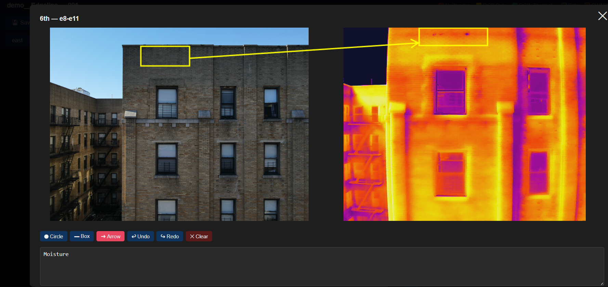

Structural / Facade inspection
Facade Inspection Viewer
A drawing-indexed viewer that turns hundreds of inspection photos into defects tied to specific building faces.


The problem
Traditional drone based photogrammetric facade inspection methods frequently produce bulky, unintuative deliverables that the end user, an engineer, has to teach themselves how to integrate into their workflow. A single building produces unreliable 3D outputs, hundreds of drone images across every face, in both visible and thermal bands. A reviewer does not need a folder of photos. They need each defect tied to a specific building face and to the engineering drawing, so it can be found, measured, and acted on, with outputs that are integrated directly into the documents the engineers already use.
What I built
I captured every building face by drone in RGB and thermal, then built a Python pipeline that organizes and places each image, and an HTML viewer that indexes the annotated defects to the correct face and a drawing grid. It is a repeatable pipeline, not a one-off export, so the next building runs through the same workflow.
The deliverable
An interactive HTML viewer organized by building face, with RGB and thermal anomaly callouts a reviewer can scan quickly and trace back to the drawing. It ships as a self-contained package the engineering team can open and hand to the client.
- Python
- HTML / CSS
- Drone (RGB + thermal)
Outcome
Replaced both a manual photo-sorting and reporting process and the need to adopt unreliable, bulky dataflows with a repeatable, production-proven deliverable that scales to the hundreds of buildings on any Metro area's facade inspection cycle.